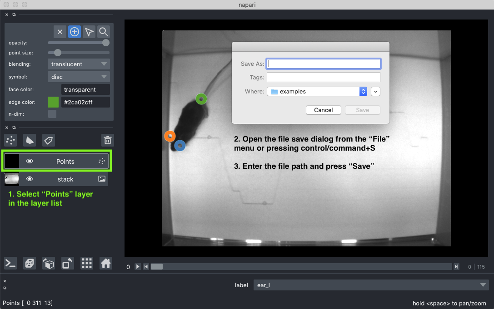

Annotating videos with napari¶
Note: this tutorial has been updated and is now compatible with napari > 0.4.5 and magicgui > 0.2.5. For details, see this pull request.
In this tutorial, we will use napari (requires version 0.3.2 or greater) to make a simple GUI application for annotating points in videos. This GUI could be useful for making annotations required to train algorithms for markless tracking of animals (e.g., DeepLabCut). In this tutorial, we will cover creating and interacting with a Points layer with properties (i.e., labels for the points), connecting custom UI elements to events, and creating custom keybindings.
At the end of this tutorial, we will have created a GUI for annotating points in videos that we can simply call by:
im_path = '<path to directory with data>/*.png'
point_annotator(im_path, labels=['ear_l', 'ear_r', 'tail'])
The resulting viewer looks like this (images from Mathis et al., 2018, downloaded from here):

You can explore the project in this repository or check out the main function below. We will walk through the code in the following sections.
from typing import List
from dask_image.imread import imread
import napari
from magicgui.widgets import ComboBox, Container
import numpy as np
COLOR_CYCLE = [
'#1f77b4',
'#ff7f0e',
'#2ca02c',
'#d62728',
'#9467bd',
'#8c564b',
'#e377c2',
'#7f7f7f',
'#bcbd22',
'#17becf'
]
def create_label_menu(points_layer, labels):
"""Create a label menu widget that can be added to the napari viewer dock
Parameters:
-----------
points_layer : napari.layers.Points
a napari points layer
labels : List[str]
list of the labels for each keypoint to be annotated (e.g., the body parts to be labeled).
Returns:
--------
label_menu : Container
the magicgui Container with our dropdown menu widget
"""
# Create the label selection menu
label_menu = ComboBox(label='feature_label', choices=labels)
label_widget = Container(widgets=[label_menu])
def update_label_menu(event):
"""Update the label menu when the point selection changes"""
new_label = str(points_layer.current_properties['label'][0])
if new_label != label_menu.value:
label_menu.value = new_label
points_layer.events.current_properties.connect(update_label_menu)
def label_changed(event):
"""Update the Points layer when the label menu selection changes"""
selected_label = event.value
current_properties = points_layer.current_properties
current_properties['label'] = np.asarray([selected_label])
points_layer.current_properties = current_properties
label_menu.changed.connect(label_changed)
return label_widget
def point_annotator(
im_path: str,
labels: List[str],
):
"""Create a GUI for annotating points in a series of images.
Parameters
----------
im_path : str
glob-like string for the images to be labeled.
labels : List[str]
list of the labels for each keypoint to be annotated (e.g., the body parts to be labeled).
"""
stack = imread(im_path)
viewer = napari.view_image(stack)
points_layer = viewer.add_points(
properties={'label': labels},
edge_color='label',
edge_color_cycle=COLOR_CYCLE,
symbol='o',
face_color='transparent',
edge_width=8,
size=12,
ndim=3
)
points_layer.edge_color_mode = 'cycle'
# add the label menu widget to the viewer
label_widget = create_label_menu(points_layer, labels)
viewer.window.add_dock_widget(label_widget)
@viewer.bind_key('.')
def next_label(event=None):
"""Keybinding to advance to the next label with wraparound"""
current_properties = points_layer.current_properties
current_label = current_properties['label'][0]
ind = list(labels).index(current_label)
new_ind = (ind + 1) % len(labels)
new_label = labels[new_ind]
current_properties['label'] = np.array([new_label])
points_layer.current_properties = current_properties
def next_on_click(layer, event):
"""Mouse click binding to advance the label when a point is added"""
if layer.mode == 'add':
next_label()
# by default, napari selects the point that was just added
# disable that behavior, as the highlight gets in the way
layer.selected_data = {}
points_layer.mode = 'add'
points_layer.mouse_drag_callbacks.append(next_on_click)
@viewer.bind_key(',')
def prev_label(event):
"""Keybinding to decrement to the previous label with wraparound"""
current_properties = points_layer.current_properties
current_label = current_properties['label'][0]
ind = list(labels).index(current_label)
n_labels = len(labels)
new_ind = ((ind - 1) + n_labels) % n_labels
new_label = labels[new_ind]
current_properties['label'] = np.array([new_label])
points_layer.current_properties = current_properties
point_annotator()¶
We will create the GUI within a function called point_annotator().
Wrapping the GUI creation in the function allows us to integrate it into other functions (e.g., a command line interface) and applications.
See below for the function definition.
def point_annotator(
im_path: str,
labels: List[str],
):
"""Create a GUI for annotating points in a series of images.
Parameters
----------
im_path : str
glob-like string for the images to be labeled.
labels : List[str]
list of the labels for each keypoint to be annotated (e.g., the body parts to be labeled).
"""
Loading the video¶
First, we load the movie to be annotated.
Since behavior movies can be quite long, we will use a lazy loading strategy (i.e., we will only load the frames as they are used).
Using dask-image, we can construct an object that we can pass to napari for lazy loading in just one line.
For more explanation on using dask to lazily load images in napari, see this tutorial.
stack = imread(im_path)
We can then start the viewer.
viewer = napari.view_image(stack)
napari.run()
Annotating with points¶
We will annotate the features of interest using points in a napari Points layer.
Each feature will be given a different label so that we can track them across frames.
To achieve this, we will store the label in the Points.properties property in the ‘label’ key.
We will instantiate the Points layer without any points.
However, we will initialize Points.properties with the property values we will be using to annotate the images.
To do so, we will define a properties dictionary with a key named label and values labels.
The key, ‘label’, is the name of the property we are storing which feature of interest each point corresponds with.
The values, ‘labels’, is the list of the names of the features we will be annotating (defined above in the “point_annotator()” section).
We add the Points layer to the viewer using the viewer.add_points() method.
As discussed above, we will be storing which feature of interest each point corresponds to via the label property we defined in the properties dictionary.
To visualize the feature each point represents, we set the edge color as a color cycle mapped to the label property (edge_color='label').
properties = {'label': labels}
points_layer = viewer.add_points(
properties=properties,
edge_color='label',
edge_color_cycle=COLOR_CYCLE,
symbol='o',
face_color='transparent',
edge_width=8,
size=12,
ndim=3
)
Note that we set the edge_color_cycle to COLOR_CYCLE.
You can define your own color cycle as a list of colors.
The colors can be defined as hex strings, standard color names or RGBA arrays.
For example, the category10 color palette would be:
COLOR_CYCLE = [
'#1f77b4',
'#ff7f0e',
'#2ca02c',
'#d62728',
'#9467bd',
'#8c564b',
'#e377c2',
'#7f7f7f',
'#bcbd22',
'#17becf'
]
We set the points ndim to 3 so that the coordinates for the point annotations we add will be 3 dimensional (time + 2D).
Finally, we set the edge color to a color cycle:
points_layer.edge_color_mode = 'cycle'
Adding a GUI for selecting points¶
First, we will define a function to create a GUI for select the labels for
points. The function create_label_menu() will take the points layer we created
and the list of labels we will annotate with and return the label menu GUI.
Additionally, we will create and connect all the required callbacks to make the
GUI interactive.
def create_label_menu(points_layer, labels):
"""Create a label menu widget that can be added to the napari viewer dock
Parameters:
-----------
points_layer : napari.layers.Points
a napari points layer
labels : List[str]
list of the labels for each keypoint to be annotated (e.g., the body parts to be labeled).
Returns:
--------
label_menu : Container
the magicgui Container with our dropdown menu widget
"""
Within create_label_menu(), we will use magicgui to add a dropdown menu for selecting which the label for the point we are about to add or the point we have selected.
magicgui is a library from the napari team for building GUIs from functions and works by applying function decorators.
To make the a dropdown menu populated with the valid point labels, we simply create a magicgui ComboBox. We set the label (title) for the ComboBox with the label keyword argument and we set the dropdown menu options via the choices keyword argument. Recall that the labels names are passed to the create_label_menu() function as a list via the labels parameter. Next, we wrap the label_menu in a magicgui Container to finish our GUI widget.
# Create the label selection menu
label_menu = ComboBox(label='feature_label', choices=labels)
label_widget = Container(widgets=[label_menu])
We then need to connect the dropdown menu (label_menu) to the points layer to ensure the menu selection is always synchronized to the Points layer model.
First, we define a function to update the label dropdown menu GUI when the value of the selected point or next point to be added is changed.
On the points layer, the property values of the next point to be added are stored in the current_properties property.
The points layer has an event that gets emitted when the current_properties property is changed (points_layer.events.current_properties).
We connect the function we created to the event so that update_label_menu() is called whenever Points.current_property is changed.
def update_label_menu(event):
"""Update the label menu when the point selection changes"""
new_label = str(points_layer.current_properties['label'][0])
if new_label != label_menu.value:
label_menu.value = new_label
points_layer.events.current_properties.connect(update_label_menu)
Next, we define a function to update the points layer if the selection in the labels dropdown menu is changed.
Similar to the points layer, the magicgui object has an event that gets emitted whenever the selected label is changed (label_menu.changed).
To ensure the points layer is updated whenever the GUI selection is changed, we connect label_changed() to the label_menu.changed event.
def label_changed(event):
"""Update the Points layer when the label menu selection changes"""
selected_label = event.value
current_properties = points_layer.current_properties
current_properties['label'] = np.asarray([selected_label])
points_layer.current_properties = current_properties
label_menu.changed.connect(label_changed)
Finally, we add the GUI created by magicgui to the napari viewer dock.
# add the label menu widget to the viewer
label_widget = create_label_menu(points_layer, labels)
viewer.window.add_dock_widget(label_widget)
Keybindings for switching labels¶
For convenience, we can also define functions to increment and decrement the currently selected label and bind them to key presses using the napari keybindings framework.
First, we define a function to increment to the next label and decorate it with the viewer key binding decorator.
The decorator requires that we pass the key to bind the function to as a string and the decorated function should take an event as an input argument.
In this case, we are binding next_label() to the . key.
@viewer.bind_key('.')
def next_label(event=None):
"""Keybinding to advance to the next label with wraparound"""
# get the currently selected label
current_properties = points_layer.current_properties
current_label = current_properties['label'][0]
# determine the index of that label in the labels list
ind = list(labels).index(current_label)
# increment the label with wraparound
new_ind = (ind + 1) % len(labels)
# get the new label and assign it
new_label = labels[new_ind]
current_properties['label'] = np.array([new_label])
points_layer.current_properties = current_properties
We can do the same with another function that instead decrements the label with wraparound.
@viewer.bind_key(',')
def prev_label(event):
"""Keybinding to decrement to the previous label with wraparound"""
current_properties = points_layer.current_properties
current_label = current_properties['label'][0]
ind = list(labels).index(current_label)
n_labels = len(labels)
new_ind = ((ind - 1) + n_labels) % n_labels
new_label = labels[new_ind]
current_properties['label'] = np.array([new_label])
points_layer.current_properties = current_properties
Mousebinding to iterate through labels¶
Like keybindings, we can also bind functions to mouse events such as clicking or dragging.
Here, we create a function that will increment the label after a point is added (i.e., the mouse is clicked in the viewer canvas when in the point adding mode).
This is convenient for quickly adding all labels to a frame, as one can simply click each feature in order without having to manually swap labels.
To achieve this, we first check if the points layer is the the adding mode (layer.mode == 'add').
If so, we then reuse the next_label() function we defined above in the keybindings to increment the label.
Finally,
def next_on_click(layer, event):
"""Mouse click binding to advance the label when a point is added"""
# only do something if we are adding points
if layer.mode == 'add':
next_label()
# by default, napari selects the point that was just added
# disable that behavior, as the highlight gets in the way
layer.selected_data = []
After creating the function, we then add it to the points_layer mouse drag callbacks.
In napari, clicking and dragging events are both handled under the mouse_drag_callbacks.
For more details on how mouse event callbacks work,
see the examples [1, 2].
# bind the callback to the mouse drag event
points_layer.mouse_drag_callbacks.append(next_on_click)
Using the GUI¶
Launching the GUI¶
Now that you’ve put it all together, you should be ready to test! You can call the function as shown below.
im_path = '<path to directory with data>/*.png'
point_annotator(im_path, labels=['ear_l', 'ear_r', 'tail'])
Saving the annotations¶
Once we are happy with the annotations, we can save them to a CSV file using the builing CSV writer for the points layer. To do so, first, select the “Points” layer in the layer list and then click “Save Selected layer(s)” in the “File” menu or press control+S (cmd+S on Mac OS) to bring up the file save dialog. From here you can enter the file path and save the annotation coordinates as a CSV.

Alternatively, we can use the points_layer.save() method to save the coordinates from the points layer to a CSV file.
We can enter the command either in the script (e.g., bind a save function to a hot key) or the napari terminal.
points_layer.save('path/to/file.csv')